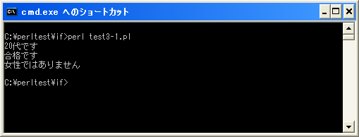

論理演算子
関係演算子を使えば簡単な条件判断は可能ですが、論理演算子を使うことで「a と bが等しい」且つ「c は dよりも大きい」などの複数の条件式を組み合わせたより複雑な条件式を記述することができます。
まずは論理演算子の種類を確認します。
| 演算子 | 名前 | 記述例 | 意味 |
|---|---|---|---|
| && | 論理積 AND | a && b | aとbが共に真の場合に真 |
| || | 論理和 OR | a || b | aかbの少なくとも1つが真の場合に真 |
| ! | 否定 NOT | !a | aが真の時に偽、偽の時に真 |
論理積の場合は左辺及び右辺がどちらも真となる場合に全体として真を返します。論理和の場合は左辺又は右辺の少なくともどちらか1つが真の場合に全体として真を返します。否定は右辺が真なら偽を、偽なら真を返します。
このように論理演算子は真か偽かだけを見ていますので、左辺又は右辺には関係演算子を使った条件式などを記述し、組み合わせて使用することになります。
論理積
論理積(AND)は演算子の左辺及び右辺の条件式が共に真の場合のみ全体の評価が真となります。
| 左辺 | 右辺 | 全体 |
|---|---|---|
| 真 | 真 | 真 |
| 真 | 偽 | 偽 |
| 偽 | 真 | 偽 |
| 偽 | 偽 | 偽 |
例えば次のように使用します。
my $old;
$old = 24;
if ($old >= 20 && $old < 30){
print "20代です¥n";
}
左辺の条件式である変数「$old」に格納されている値が「20」以上かどうかを評価します。結果は真(true)です。次に右辺の条件式である変数「$old」に格納されている値が「30」より小さいかどうかを評価します。結果は真(true)です。最後に&&演算子の左辺と右辺を評価し、どちらも真(true)ですので全体の条件式も真(true)となります。(なぜ&&が最後に評価されるのかは演算子の優先順位が低いためです)。
論理積の場合はまず左辺の値をみます。左辺が真の場合のみ今度は右辺の値を確認します。もし左辺が偽の場合は右側の値を確認しません。なぜならば論理積の場合は左辺及び右辺の両方が真の場合のみ真となりますので左辺が偽であった場合は右辺を確認する必要がないためです。
この左側が偽なら右側は確認しないという特性を利用したプログラムが記述されることがあります。よく使われるような記述方法はまた別のページで確認します。
論理和
論理和(OR)は演算子の右辺か左辺のどちらかの条件式が真の場合に全体の評価が真となります。
| 左辺 | 右辺 | 全体 |
|---|---|---|
| 真 | 真 | 真 |
| 真 | 偽 | 真 |
| 偽 | 真 | 真 |
| 偽 | 偽 | 偽 |
例えば次のように使用します。
my ($kokugo, $sansu);
$kokugo = 58;
$sansu = 75;
if ($kokugo >= 60 || $sansu >= 60){
print "合格です¥n";
}
左辺の条件式である変数「$kokugo」に格納されている値が「60」以上かどうかを評価します。結果は偽(false)です。次に右辺の条件式である変数「$sansu」に格納されている値が「60」以上かどうかを評価します。結果は真(true)です。最後に||演算子の左辺と右辺を評価し、少なくともどちらか1つが真(true)ですので全体の条件式も真(true)となります。
論理和の場合はまず左辺の値をみます。左辺が真の場合には右辺の値を確認しません。左辺が偽の場合だけ右側の値を確認します。なぜならば論理和の場合は左辺及び右辺の少なくともどちらかが真の場合は真となりますので左辺が真であった場合は右辺を確認する必要がないためです。
論理積の場合と同じく論理和の場合に左側が真なら右側は確認しないという特性を利用したプログラムが記述されることがあります。よく使われるような記述方法はまた別のページで確認します。
否定
否定(NOT)は演算子の右辺の条件式が真の場合に全体の評価が真となり、右辺の条件式が偽の場合に全体の評価が偽となります。
| 右辺 | 全体 |
|---|---|
| 真 | 偽 |
| 偽 | 真 |
例えば次のように使用します。
my $seibetu;
$seibetu = "男性";
if (!($seibetu eq "女性")){
print "女性ではありません¥n";
}
右辺の条件式である変数「$goukaku」が真か偽かを評価します。結果は偽(false)ですのでその否定となるため真(true)となります。
否定を使う場合には演算子の優先順位に注意して下さい。「&&」や「||」は優先順位が比較的低いので次のように記述しても意図した通りの動作をします。
my ($kokugo, $sansu);
$kokugo = 58;
$sansu = 75;
if ($kokugo >= 60 || $sansu >= 60){
print "合格です¥n";
}
それに対して「!」は優先順位が「==」や「<」よりも高いので次のように記述すると先に否定が行われます。
my $seibetu;
$seibetu = "男性";
if (!$seibetu eq "女性"){
print "女性ではありません¥n";
}
この場合は先に「!」が評価され、その後で「==」が評価されてしまいます。その為、否定を使う場合は次のように括弧()を使って優先順位を変更する必要があります。
my $seibetu;
$seibetu = "男性";
if (!($seibetu eq "女性")){
print "女性ではありません¥n";
}
サンプルプログラム
では簡単なプログラムで確認して見ます。
use strict;
use warnings;
use utf8;
binmode STDIN, ':encoding(cp932)';
binmode STDOUT, ':encoding(cp932)';
binmode STDERR, ':encoding(cp932)';
my $old;
$old = 24;
if ($old >= 20 && $old < 30){
print "20代です¥n";
}
my ($kokugo, $sansu);
$kokugo = 58;
$sansu = 75;
if ($kokugo >= 60 || $sansu >= 60){
print "合格です¥n";
}
my $seibetu;
$seibetu = "男性";
if (!($seibetu eq "女性")){
print "女性ではありません¥n";
}
上記を「test3-1.pl」の名前で保存します(文字コードはUTF-8です)。そしてコマンドプロンプトを起動し、プログラムを保存したディレクトリに移動してから次のように実行して下さい。

( Written by Tatsuo Ikura )

著者 / TATSUO IKURA
初心者～中級者の方を対象としたプログラミング方法や開発環境の構築の解説を行うサイトの運営を行っています。